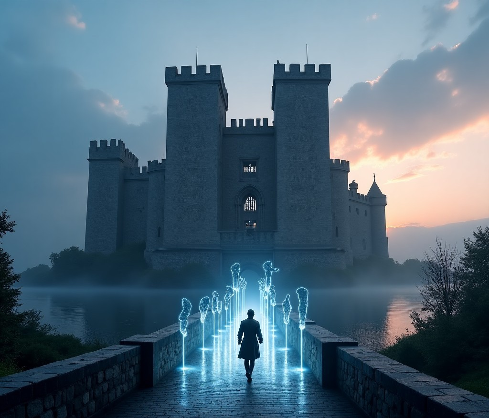

歴史を「生きる」体験へ：時間の織りなす物語
ChronoEchoは、AIとAR/VR技術の融合により、単なる情報収集を超えた、五感で歴史を体験する革新的なメディアです。過去の息吹を感じ、その物語の一部となる、かつてない没入型体験があなたを待っています。
ChronoEchoの深淵へChronoEchoとは？：記憶の再構築
2030年、AIは人間の知覚と創造性を拡張する「共創者」としての地位を確立しました。ChronoEchoは、このAIの力を最大限に活用し、グローバル化とデジタル化の中で高まる「歴史」や「文化」への回帰ニーズに応えます。私たちは、歴史を「暗記するもの」から「解釈し、意味づけするもの」へと変革します。

超パーソナライゼーション
あなたの興味、学習レベル、そして心の状態に合わせて、AIが最適な歴史物語を生成します。それは、あなただけの、唯一無二の「時間旅行」です。
五感に訴える没入感
ARグラスや触覚デバイスを通じて、当時の風景、音、匂い、さらには温度変化までをリアルに再現。まるでその場にタイムスリップしたかのような臨場感を味わえます。
.png)
双方向性（インタラクティブ・ナラティブ）
歴史上の人物と対話し、物語の分岐点で選択を迫られ、あなたの行動が歴史の展開に影響を与えます。あなたは単なる傍観者ではなく、物語の「創造者」となるのです。
ChronoEchoを支えるAI技術：時間の錬金術
ChronoEchoの魔法は、複数の専門AIモジュールが織りなす精緻な連携によって生まれます。それは、過去の断片を繋ぎ合わせ、新たな「Echoes」を創造する時間の錬金術です。

歴史コンテキスト生成AI (HCG-AI)
膨大な歴史データから、当時の風景、生活音、言葉遣いなどをリアルタイムで生成。資料が少ない時代も、最も蓋然性の高いシナリオを提示し、歴史の空白を埋めます。

インタラクティブ対話AI (ID-AI)
ユーザーの質問や感情のニュアンスを理解し、歴史上の人物として対話。あなたの興味や学習進度に応じて、物語の展開や情報の深さを調整します。

パーソナライズド・ナラティブAI (PN-AI)
あなたの体験履歴や嗜好を分析し、個々に最適化された歴史物語のプロット、登場人物、感情曲線、学習パスを動的に生成。あなただけの「歴史の旅」をデザインします。

知識グラフ・検証AI (KGV-AI)
膨大な歴史データを構造化し、生成コンテンツの事実関係をリアルタイムで検証。AIの「ハルシネーション」を最小限に抑え、歴史的正確性を担保します。

エッジ・レンダリングAI (ER-AI)
ARグラスやデバイス上で、生成されたコンテンツの一部をリアルタイムでレンダリング。クラウドとの通信遅延を最小限に抑え、シームレスで滑らかなAR体験を実現します。
コンテンツとサービス：歴史を「生きる」具体例
ChronoEchoは、単なる情報提供を超え、ユーザーが歴史を「解釈」し、「意味づけ」するプロセスを支援します。それは、あなたの心に深く刻まれる感情的な体験となるでしょう。

ローマのコロッセオ：剣闘士の咆哮を聴く
かつての闘技場に立てば、剣闘士の咆哮、観衆の熱狂的な歓声が響き渡り、当時の興奮が目の前に再現されます。五感で感じる歴史の臨場感は、あなたを古代ローマへと誘います。

京都の古道：平安の雅に触れる
古都の小道を歩けば、平安時代の貴族や商人が行き交う姿がARで現れ、彼らの雅な会話が当時の言葉遣いで聞こえてきます。日常の中に歴史が息づく、幽玄な体験です。

幕末の京都：運命の選択を迫られる
激動の幕末、あなたはどの藩に味方し、誰と交流しますか？あなたの選択が物語の展開を左右し、歴史のifを体験します。あなたは単なる傍観者ではなく、歴史の「創造者」となるのです。
この感情的な繋がりは、あなたの歴史観に変革をもたらします。教科書で学んだ知識が、血の通った「生きた物語」として再構築され、歴史があなた自身のアイデンティティの一部となるでしょう。
時代を巡る：ChronoEchoの「Echoes」
文明の誕生
中世の幕開け
ルネサンス
産業革命
現代の始まり
古代の残響：文明の夜明け

この石器は、遥か昔、人類が初めて道具を手にした時代の証です。AIが再現する当時の生活音に耳を傾け、狩猟採集民の知恵と勇気を追体験しましょう。
中世の残響：騎士と城壁の物語
堅牢な城壁の向こうには、騎士たちの忠誠と裏切り、そして民衆の祈りが響き渡っていました。AIが紡ぐ中世の物語に、あなたの運命を委ねてみませんか？
近世の残響：ルネサンスの輝き

芸術と科学が花開いたルネサンス期。この絵画に込められた画家の情熱、そして当時の人々の息遣いをAIが再現します。新たな発見があなたを待っています。
近代の残響：産業革命の鼓動

蒸気機関の轟音、そして人々の希望と苦悩が交錯した近代。AIが再現する当時の街並みを歩き、産業革命がもたらした社会の変化を肌で感じてください。
現代の残響：情報化社会の光と影

私たちが生きる現代も、やがて歴史となる。AIは、今日の出来事を未来の世代に伝える「Echoes」としてアーカイブします。あなたの「今」も、未来の歴史の一部となるでしょう。
ユーザーの声：ChronoEchoが紡ぐ感動
「ChronoEchoで訪れた幕末の京都は、教科書で読んだどの歴史よりも鮮烈でした。まるで自分がその時代に生きていたかのような感覚です。」
「子供と一緒に古代ローマを体験しました。AIが生成する剣闘士の戦いは迫力満点で、子供も歴史に夢中になりました。最高の家族体験です！」
「研究に行き詰まっていた時、ChronoEchoで当時の人々の生活を追体験しました。AIとの対話を通じて、新たな視点とインスピレーションを得ることができました。」
ChronoEchoの哲学：歴史は流動する物語
ChronoEchoは、歴史を単一の固定された事実の羅列とは捉えません。歴史とは、無数の人々の営み、選択、そして感情が織りなす、流動的で多義的な物語であると信じています。AIは、この物語の断片を再構築し、ユーザー一人ひとりの視点から新たな意味を付与する「語り部」となります。
私たちは、AIが生成する「蓋然性の高い物語」を通じて、ユーザーが歴史の「if」を思考し、多様な解釈の可能性を探求することを促します。これにより、ユーザーは過去の出来事を多角的に捉え、現代社会の複雑な問題に対する洞察を深めることができるでしょう。ChronoEchoは、歴史を「学ぶ」だけでなく、「思考し、創造する」場を提供することで、知的好奇心と批判的思考力を育むことを目指します。
ビジネスモデル：持続可能な時間旅行のために
ChronoEchoは、革新的な体験を継続的に提供するため、多角的な収益モデルを組み合わせます。
フリーミアムモデル（個人ユーザー向け）
基本的な体験は無料で提供し、広告なし、高解像度コンテンツ、限定イベントなどへのアクセスはプレミアムサブスクリプションで提供します。
マイクロトランザクション
特定の「歴史的深掘りパック」（例：特定の人物の生涯を追体験、未公開史料に基づく物語）や、アバターカスタマイズアイテム、物語の選択をやり直すトークンなどを販売します。
B2Bソリューション（法人・団体向け）
教育機関、観光地、文化施設、企業向けに、ChronoEchoの技術を活用したカスタマイズコンテンツ開発やライセンスを提供します。
データライセンス
厳格なプライバシー保護の下で、匿名化・集計されたユーザーの歴史的興味関心データや行動パターンデータを、学術研究機関やマーケティング企業に提供します。
倫理的考察と対処法：信頼される記憶の守護者として
ChronoEchoは、AIがもたらす倫理的課題に真摯に向き合い、透明性と責任を持って運営されます。私たちは、歴史の真実性と多様性を尊重し、信頼される記憶の守護者であり続けます。
歴史の改ざん・誤情報の拡散（ハルシネーション）
AIが生成する物語は「歴史的蓋然性」を重視し、厳密なファクトチェックと専門家による多層的な監修を徹底。ユーザーからのフィードバックも迅速に反映し、常に情報の正確性を追求します。
プライバシー侵害とデータ利用
ユーザーデータは厳格に匿名化・非識別化され、明確な同意とオプトアウト機能を提供。最高水準のデータセキュリティを導入し、あなたのプライバシーを徹底的に保護します。
AI生成コンテンツの著作権帰属
プラットフォームに著作権が帰属する方針を明確化しつつ、ユーザー生成コンテンツ（UGC）の権利も尊重。学習データの適正利用と引用元の明示を徹底します。
歴史上の人物の肖像権・名誉権
歴史的資料に基づいた客観的描写を心がけ、AIが創作した部分についてはフィクション性を明確にユーザーに伝えます。苦情対応窓口を設置し、迅速かつ誠実に対応します。
雇用問題
AIを「共創者」と位置づけ、歴史家、観光ガイド、教育者にはAIでは代替できない深い洞察や人間的なインタラクションを提供する新たな役割を創出。リスキリング・アップスキリング支援も積極的に行います。
未来への展望：集合的記憶の再構築と人類の遺産
ChronoEchoの登場は、単にメディア業界を変革するだけでなく、人類の「集合的記憶」のあり方そのものに影響を与えます。それは、過去と現在、そして未来を繋ぐ壮大な試みです。
個々人が歴史を「体験」し、「解釈」し、そして「共有」するプロセスを通じて、より多様で多層的な集合的記憶が形成されます。異なる文化や背景を持つ人々が、共通の歴史的体験を通じて相互理解を深め、共感を育むことができるでしょう。これは、分断が進む現代社会において、平和と協調を促進するための重要な役割を果たすと信じています。
将来的には、ChronoEchoは単なる過去の再現に留まらず、未来の世代に「現在のEchoes」を伝えるプラットフォームへと進化する可能性があります。現代の出来事や個人の生活の記録をAIが収集・整理し、未来のChronoEchoユーザーがそれを体験できるようにする。これにより、ChronoEchoは、過去と現在、そして未来を繋ぐ「時間軸を超えた記憶のアーカイブ」となり、人類の知と経験を永続的に継承する、新たな文明のインフラとなることを目指します。
あなたの「Echoes」をChronoEchoで紡ぎませんか？
あなたの物語を創造する